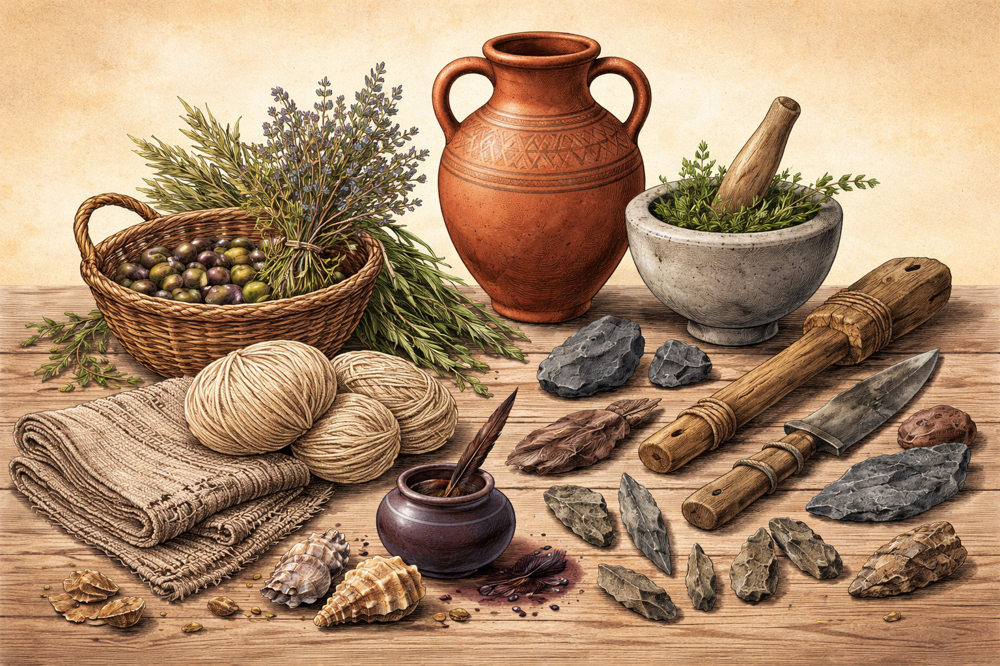
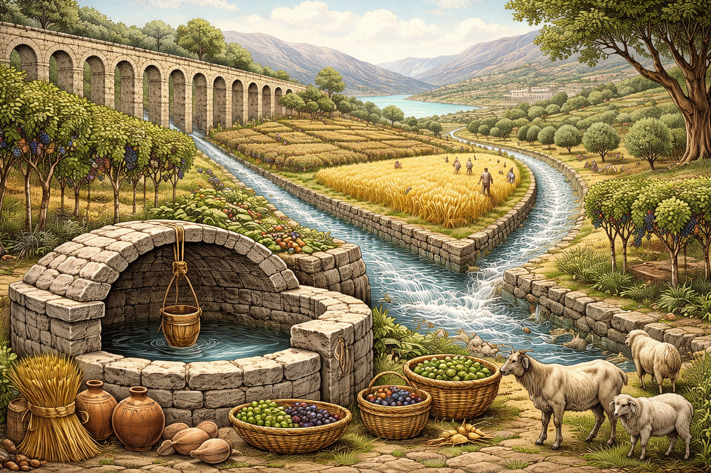
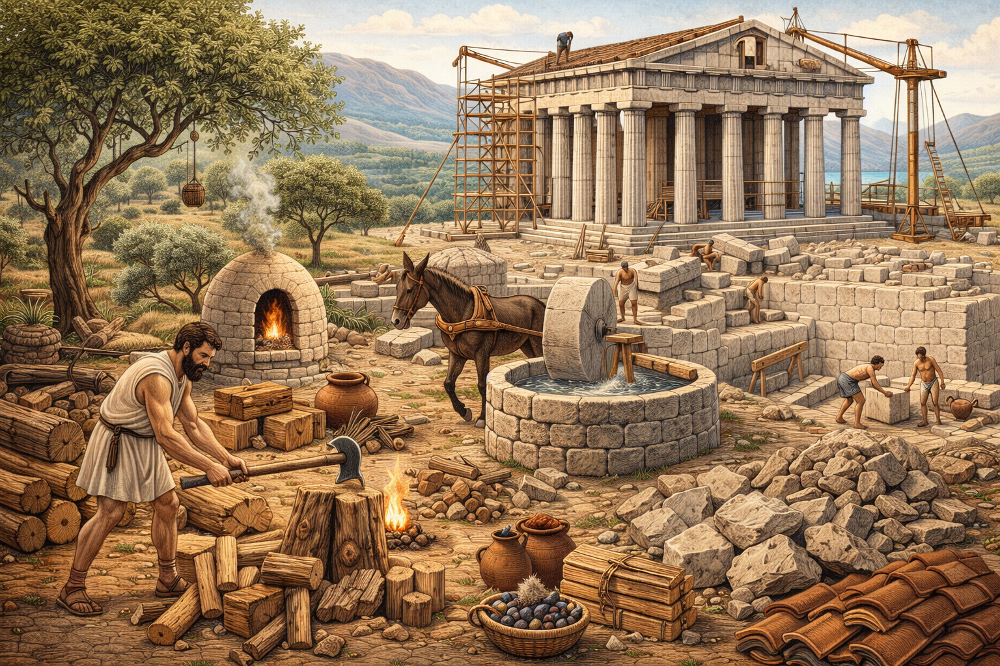

¿Cómo obtenían los recursos los griegos y cómo practicaban la sostenibilidad?
La civilización griega logró sobrevivir y prosperar durante siglos gracias a la gestión eficiente de sus recursos naturales.
La geografía del Mediterráneo y las montañas del territorio permitieron que cada polis desarrollara estrategias adaptadas
al entorno, fomentando la autosuficiencia y la cooperación entre comunidades.

Recursos naturales y alimentación
Los griegos obtenían agua mediante acueductos, canales y cisternas para almacenar lluvia y abastecer las ciudades en verano.
Su alimentación se basaba en cereales, olivos y uvas, cultivados con rotación de cultivos y terrazas que prevenían la erosión.
La ganadería moderada de ovejas y cabras y la pesca costera permitían abastecer a la población sin sobreexplotar el entorno.

Materiales de construcción y vivienda
Las construcciones se realizaban con materiales locales como piedra, madera y barro.
Las casas y templos se orientaban para aprovechar la luz natural y la ventilación, reduciendo la necesidad de fuego y energía.
Las paredes gruesas y los techos de tejas mantenían los interiores frescos en verano y cálidos en invierno, demostrando
un conocimiento temprano de eficiencia energética.
Energía
La energía provenía principalmente de recursos naturales y fuerza humana o animal.
Usaban leña y carbón vegetal para cocinar y calentar, y molinos, barcos de vela y transporte humano o animal para tareas productivas.
No dependían de fuentes intensivas ni contaminantes, manteniendo un modelo sostenible para su época.

Comercio y gestión de recursos
El comercio marítimo permitía intercambiar recursos entre polis sin sobreexplotar la tierra local.
Cada ciudad-estado era parcialmente autosuficiente, y alianzas o tributos garantizaban alimentos y materiales en épocas de escasez,
promoviendo cooperación y resiliencia.
Prácticas sostenibles para la supervivencia
- Rotación de cultivos y terrazas agrícolas que mantenían el suelo fértil a largo plazo.
- Recolección y almacenamiento de agua de lluvia para asegurar el abastecimiento.
- Construcción con materiales locales, minimizando el impacto ambiental.
- Pesca y ganadería moderadas, usando recursos renovables sin sobreexplotar.
- Organización social y cooperación entre ciudadanos, que fortalecía la resiliencia comunitaria.
Gracias a estas prácticas, la civilización griega logró un equilibrio entre desarrollo, supervivencia y uso responsable de los recursos,
ofreciendo un ejemplo temprano de sostenibilidad que todavía puede inspirar modelos modernos de gestión ambiental y social.
¿Por qué triunfó la época griega?
La civilización griega triunfó porque supo aprovechar de manera sostenible su entorno geográfico y el mar Mediterráneo.
La ubicación de sus polis favoreció la agricultura, la pesca y el comercio sin sobreexplotar los recursos locales,
lo que permitió que las ciudades-estado se desarrollaran de manera equilibrada y autosuficiente.
A la vez, Grecia se convirtió en un laboratorio político y cultural donde surgieron sistemas inéditos,
como la democracia ateniense y la organización social de Esparta, que buscaban un orden funcional para la comunidad.
Los griegos también avanzaron en ciencia, arquitectura y urbanismo, aplicando conocimientos que hoy podríamos considerar sostenibles.
Por ejemplo, sus ciudades estaban diseñadas para aprovechar la luz natural, la ventilación y el agua,
minimizando el impacto ambiental. Sus técnicas agrícolas y sistemas de irrigación respetaban los ciclos de la tierra,
y su comercio marítimo fomentaba la cooperación regional sin agotar los recursos locales.
¿Por qué desapareció la civilización griega?
La Grecia clásica sufrió por su falta de unidad política y coordinación en el uso de recursos.
Las polis enfrentadas entre sí generaron conflictos, como la Guerra del Peloponeso, que provocaron crisis económicas,
desequilibrio social y sobreexplotación de territorios.
Aunque la democracia ateniense y el sistema espartano tenían ventajas organizativas,
no lograron garantizar un desarrollo sostenible a largo plazo.
Tras la muerte de Alejandro Magno, la herencia griega continuó en el mundo helenístico, pero sin autonomía para gestionar
sus recursos de manera integrada. Roma absorbió la cultura griega, y muchas prácticas locales sostenibles se perdieron,
mostrando la importancia de la cooperación y planificación ambiental como lecciones para cualquier civilización.
Cultura
La cultura de la civilización griega antigua fue una de las más ricas y trascendentes del mundo antiguo.
Se desarrolló en un entorno rodeado de montañas e islas, lo que favoreció el surgimiento de distintas
ciudades-estado independientes, pero con una identidad común basada en la lengua, la religión y las tradiciones.
Los griegos buscaban la armonía en todos los aspectos de la vida: en el arte, en el pensamiento, en la política y
en la relación con la naturaleza.

Arte
El arte griego fue una expresión de equilibrio y perfección.
En la arquitectura, los templos dedicados a los dioses —como el Partenón de Atenas— fueron construidos con
proporciones cuidadosamente calculadas para transmitir belleza y orden.
En la escultura, representaban el cuerpo humano con gran realismo y sentido estético, exaltando la fuerza, la
serenidad y la armonía.
El arte no era solo decoración, sino una forma de rendir homenaje a los dioses y de reflejar los ideales de la
sociedad.
Literatura
La literatura y el teatro también fueron pilares fundamentales de su cultura.
Los poemas épicos de Homero, La Ilíada y La Odisea, transmitían los valores de heroísmo, honor y destino.
Más tarde, el teatro se convirtió en una forma de reflexión social y moral.
Las tragedias de Sófocles o Eurípides trataban temas como la justicia, el amor, la culpa o el poder,
mientras que las comedias de Aristófanes mostraban con humor los defectos humanos y las tensiones de la vida
política.
Filosofía
En la filosofía, los griegos dieron un paso decisivo hacia la razón.
Dejar atrás las explicaciones míticas para buscar respuestas racionales fue una auténtica revolución del
pensamiento.
Sócrates, Platón y Aristóteles abrieron caminos que todavía influyen en la manera en que entendemos la verdad, la
ética y el conocimiento.
Para ellos, vivir bien significaba alcanzar el equilibrio, evitando los excesos y actuando conforme a la virtud.
Religión
La religión, aunque politeísta, estaba profundamente unida a la vida cotidiana.
Los griegos sentían que los dioses formaban parte del mundo natural: el mar, los bosques, los vientos y las
montañas eran sagrados.
Por eso, los rituales, las ofrendas y las fiestas religiosas eran también una forma de respeto hacia la
naturaleza.
Educación
La educación ocupaba un papel muy importante.
Los niños aprendían desde pequeños a leer, escribir, hacer deporte y razonar.
Los griegos creían que el cuerpo y la mente debían desarrollarse por igual.
En Atenas, especialmente, la formación de los jóvenes incluía música, literatura, filosofía y debate,
porque un ciudadano debía ser capaz de pensar por sí mismo y participar activamente en la vida pública.
En conjunto, la cultura griega fue una búsqueda constante de la belleza, la sabiduría y la armonía.
A través de sus obras, sus ideas y su manera de vivir, los griegos sentaron las bases de la civilización
occidental.
Su legado sigue vivo porque supieron comprender algo esencial: que el ser humano y su entorno deben convivir en
equilibrio,
y que la verdadera grandeza está en cultivar tanto la mente como el espíritu.
Arquitectura

La Arquitectura de la Antigua Grecia
La arquitectura griega es uno de los legados más importantes de la civilización helénica.
Se caracteriza por la búsqueda de la armonía, la proporción y la perfección estética.
Sus edificaciones reflejaban no solo un sentido práctico, sino también un profundo respeto por la belleza y el
orden.
Características principales
Los templos y edificios griegos muestran una atención meticulosa a la simetría y la proporción. Entre sus
rasgos distintivos se encuentran:
- Columnas: Elemento esencial, usadas tanto para soporte estructural como decorativo.
- Materiales: Predominantemente mármol y piedra caliza, aunque en etapas tempranas también
madera.
- Decoración escultórica: Frisos, metopas y frontones que narraban mitos y hazañas heroicas.
- Simetría y proporción: Todo el diseño buscaba equilibrio visual y armonía arquitectónica.
Órdenes arquitectónicos
Los griegos desarrollaron tres órdenes fundamentales:
- Dórico: Robusto y sobrio, con columnas sin base y capiteles simples.
- Jónico: Columnas más delgadas, con base y capiteles adornados con volutas.
- Corintio: Columnas ornamentadas, con capiteles decorados con hojas de acanto.
Tipos de construcciones
La arquitectura griega no solo incluía templos, sino también otros espacios públicos que reflejaban la vida de
la polis:
- Templos: Lugares de culto, como el Partenón, dedicados a los dioses.
- Teatros: Espacios al aire libre con excelente acústica, usados para representaciones
teatrales.
- Estadios y gimnasios: Para la práctica deportiva y la educación física de los ciudadanos.
- Ágoras: Plazas públicas donde se reunían los ciudadanos para comercio y política.
Legado
La influencia de la arquitectura griega es visible hasta hoy, especialmente en el estilo neoclásico europeo y
americano.
Sus principios de proporción, belleza y funcionalidad siguen siendo un referente en el diseño arquitectónico
moderno.